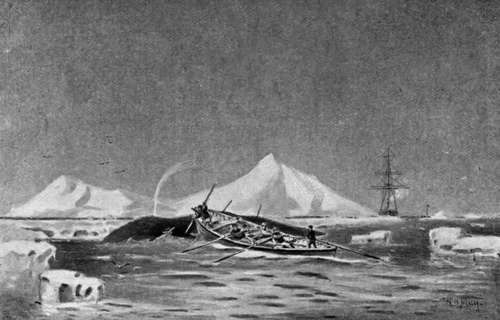

Whaling. Greenland Whale. Balaena Mysticetus. Part 4
Description
This section is from the book "Sea Fishing", by John Bickerdyke. Also available from Amazon: Sea Fishing.
Whaling. Greenland Whale. Balaena Mysticetus. Part 4
Having set aside the five or six fathoms of stray line, and been very careful to take all turns out of the lines, you begin to coil from right to left (when facing the box), or in other words with the sun (see illustration, p. 523), close up to the woodwork of the box until the line has covered the bottom. The part in your hands will then lead from the centre of the box, and to proceed, you bring this out to the side of the box again and coil as before. As you fill the box you preserve the formation of the spokes of a wheel from right to left (i.e. with the sun) with the part you bring to the side from time to time.
When the box is full you carry the line down the centre of the boat to the place prepared for its reception in the stern sheets, where you proceed as before, splicing on a line as required, until the full complement of lines are coiled, when you carry the end down the centre of the boat through the score and make fast to the foregore of the gun harpoon.
The foregore of the hand harpoon is about three fathoms in length, one end of it being spliced to the harpoon which has been previously served (wrapped) with spun yarn round the socket to prevent it from chafing, and in the other end an eye is spliced to form a loop through which the whale line is passed. Thus, if there is only time to put in the gun harpoon, the line can run freely through the loop ; but if the hand is used as well, and holds, the loop runs down the line and jambs. On the starboard side, well forward, is placed a wooden rest called a ' mik,' on which rests the harpoon shaft—usually a stout piece of ash from five to six feet long, tapering towards the top from the harpoon—the barb of the harpoon being on the salvage deck forward.
To keep the points of the harpoons and lances sharp when not in use, they are greased and wrapped round with old canvas or flannel and placed in painted canvas covers made for the purpose. On the starboard side there is a small locker or receptacle, open towards the bow of the boat, to further protect the points of the lances and hand harpoons. On the port side there is a similar locker.
The full equipment of the largest size boats will be :
One harpooneer, who pulls bow oar and is in charge of the boat.
One boat-steerer.
One line manager, who pulls stroke.
Three seamen.
One gun bollard head fixed firm in the bow.
One line bollard head, sometimes made to unship.
One harpoon gun.
One gun harpoon (the name of the ship stamped on it), with foregore spliced on.
One hand harpoon, the name of ship stamped on it, with fore-gore spliced on.
One mik.
Four lances.
Five lines, two and a half to three inches.
One hatchet (be careful to keep this sharp, and place it where it can be seized in a moment to cut the line).
One 'tail knife,' used for cutting holes in the fins and tail.
Mast and sail (occasionally).
Five pulling oars, from fourteen to sixteen feet.
One steerer oar, from eighteen to twenty feet.
Spare tholepins, grummets for each thwart, and thrum mats for the oars.
One jack or fast flag, with staff.
Two balers or small buckets. Two seal clubs or boat-hooks.
One marlingspike. One splicing fid. One file. One foghorn.
One telescope (occasionally). One compass. Ball of spun yarn. One ' tow rope ' for towing dead whales.
One 'fin tow.' A rope used for lashing the fins together across the belly of the whale. Snow shovels and knives. One ice anchor or grapnel. Small ice saw.
In addition to this it is well to take a rifle with ammunition, and a tin of hard biscuits. When you lower away after a fish, you never can be sure, owing to fog and other circumstances, when you will see the ship again.
The oars are worked with a single tholepin and a rope grummet (or grommet) on a small thrum mat to prevent noise. Just clear of where the hands clutch the oar either a grummet is tacked on or a Turk's head is worked, which, when the oar is shoved out, will prevent its escape from the side of the boat. The object of working oars in this way is twofold : viz. (1) they are very easy to ship ; (2) when shoved out they will follow of their own accord the motions of the boat, and not impede her progress. Scoresby says that Greenland whales are sharp sighted, but dull of hearing ; hence they are best approached diagonally from behind, keeping well clear of the tail, and struck, if possible, well forward towards the fins.
Frequently the boat is urged to her utmost speed, and at the proper moment the boat-steerer will tell the harpooneer to rise. The harpooneer will let go his oar, which swings alongside, fire his gun, either throw or thrust the hand if there is time, and the boat-steerer will sweep the boat clear of the fish. This is a critical moment, as a fish on the receipt of the harpoon will often in her agony lash out with her head, fins, and tail, striking the boat in many instances. A rather smart thing was done by a harpooneer from Peterhead in a ship sailing from that port. He was in the crow's nest when, a fish being sighted, several boats were sent in pursuit. One of the harpooneers got a shot, but missed ; and the fish, being extremely scared, made straight for the ship, away from all the boats in pursuit. The Peterhead man, grasping the situation, dashed through the bottom of the crow's nest, seized the main backstay, and slid down on deck with such velocity that his clothes nearly caught fire. Getting together a scratch crew, he jumped into a boat alongside and made for the fish, which, at the moment he reached her, was preparing for a ' header' (a term used by whalers when a fish is about to sound), and was already partly submerged. Letting the boat run almost on to the back of the fish, he depressed the muzzle of the gun and fastened her. The boat was smartly backed, and got clear out of an awkward position with no injury. One of the ' loose ' boats got a second harpoon into her the first time she rose, and she was soon despatched by lances.
Almost On To The Back Of The Fish.
There is a very good story told of an old Scotch harpooneer racing for a fish against a ' Dutchman'—as Scotch whalers call all foreigners. Finding that the ' Dutchman,' who was leading slightly, was likely to get first up to the fish, he jumped up, seized his harpoon, and yelling out ' A whaul!' or ' A Dutchman !' hurled it slightly in front of the other boat, indeed so near that, to avoid the iron striking the boat or one of its occupants, the boat-steerer was forced to take the boat out of the way. It is probable that the ' Dutchmen ' did not understand a word of what was shouted, but a harpoon so near them they did understand, and left the old Scotchman to secure his fish in peace.
Here is one instance of many to show how necessary it is to keep away from a fish's tail. In the year 1862 the Lady Franklin was fishing in Cumberland Gulf. One day, two fish appearing, a couple of boats were sent off in pursuit, when the skipper got fast to a fish which sounded, taking sixty fathoms of line. When she rose the ' loose' boat fastened her with a second harpoon, but as the weapon struck her she sounded (an expression used when the fish dives to the bottom), and with her tail upset the boat, throwing the crew into the water.
The crew of the other boat begged the skipper to cut the line and rescue the men in the water ; but whilst he was hesitating what to do, not liking to lose so valuable a prize, the fish made in the direction of the men, and when the boat reached their vicinity a considerable portion of the slack of the line was thrown overboard, which arrested the boat's way sufficiently long to save all but the boat-steerer, who could not swim, and for the moment was thought to be drowned, until some one observed him hanging on by the iron ring on the stem of the rescuing boat in an exhausted state. He was picked up, and the whale eventually secured.
Unlike the sperm whale, the black fish seldom charges a boat, indeed the writer only remembers one instance when a fast fish made for a loose boat, and she was turned by the receipt of a gun harpoon in her head. Plenty of accidents to life and limb are recorded in whaling books. My friend Admiral Mark-ham had two narrow escapes. On one occasion he and the boat's crew were nearly carried down by the harpooneer taking three turns round the bollard head when the fish sounded without any warning, and the line, owing to the friction, would not run ; but fortunately the water rushing over the bow lubricated it, and it rendered just in time to save them. Another time he was knocked out of the dinghy when helping to kill a fish.
If readers want further information on the subject of the Greenland whale, they cannot do better than read the following books : 'An Account of the Arctic Regions,' 1820, and 'Journal of a Voyage to the Northern Whale Fishery,' 1823, by William Scoresby, jun. ; also ' A Whaling Cruise to Baffin's Bay,' by Albert Hastings Markham, 1875.
Little appears to be known as to the length of the life of a whale, but it is said some people profess to tell the age up to a certain date, beyond which they do not pretend to be able to arrive at it. In 1894 the Balœna was fishing in Davis Strait, and killed a fish, out of which was cut a harpoon stamped with the name of the ship Jean, of Bowness (Firth of Forth). Now the Jean was lost in 1861, so that, unless it fell into other hands, this harpoon must have been placed in the fish either in the year 1861 or previously to it. If we are to judge by other large animals, as, for instance, the elephant, whales must be extremely long-lived.
The above remarks apply to the Greenland Whale (Balœna mysticetus), the ' Black Fish' of the Scotch whalers, ' Bowhead ' of the Americans.
Continue to:
- prev: Whaling. Greenland Whale. Balaena Mysticetus. Part 3
- Table of Contents
- next: The Bottlenose (Hyperoodon Rostratus)
Tags
fishing, hooks, bait, fishermen, spanish mackerel, mackerel fishing